Section 2 - continued
OS Scheduling - Exploring CPU Scheduling
In this lab I explored CPU scheduling concepts and implemented scheduling algorithms in C#. I learned the difference between long-term, medium-term and short-term schedulers. I implemented First Come First Serve and Round Robin scheduling algorithms and visualised the results using Gantt charts. I also extended the Round Robin simulation to include priority based scheduling and analysed how different time slice sizes affect system performance and turnaround time.
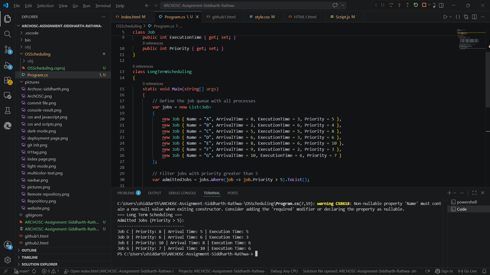
Section 1
Long term scheduling controls which jobs are admitted into the system from the job queue. I simulated a job queue with seven processes each having different arrival times, execution times and priorities. I then wrote a C# function that filters and admits only the jobs with a priority greater than 5. This means only the most important jobs are allowed into the system. The admitted jobs were Process C with priority 8, Process D with priority 6, Process E with priority 10 and Process G with priority 7. Processes A, B and F were rejected because their priorities were 5, 4 and 3 which did not meet the threshold.
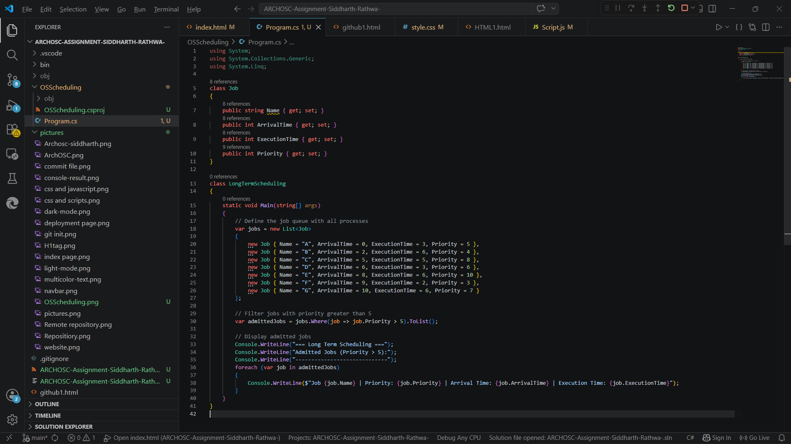
Section 1 - Continued
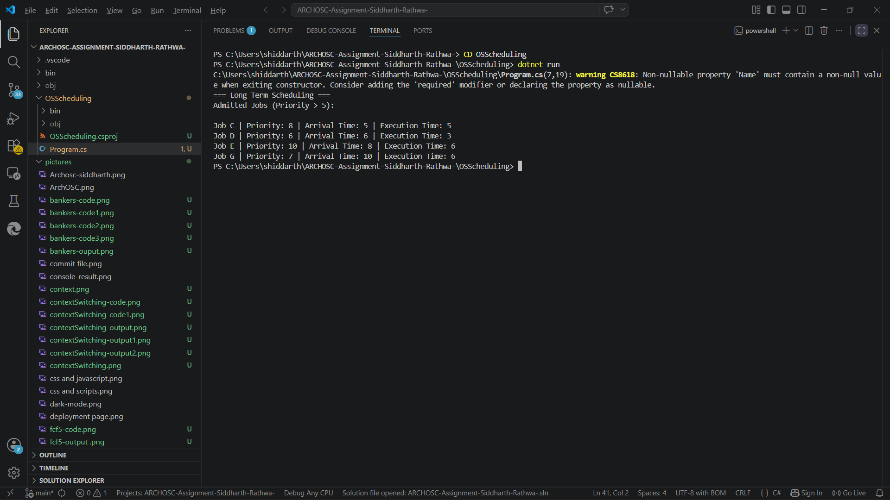
Section 1 - continued
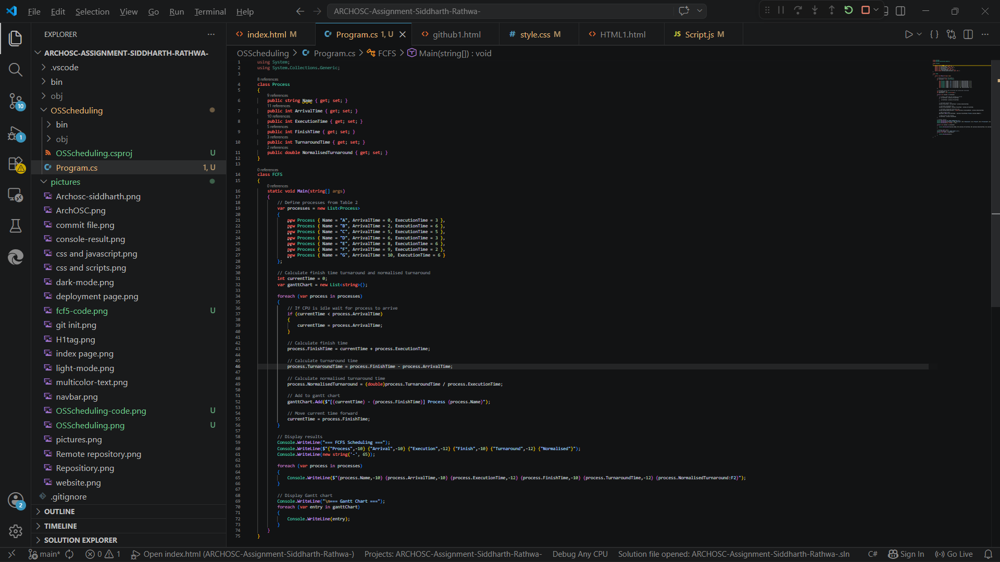
Section 2
Long term scheduling controls which jobs are admitted into the system from the job queue. I simulated a job queue with seven processes each having different arrival times, execution times and priorities. I then wrote a C# function that filters and admits only the jobs with a priority greater than 5. This means only the most important jobs are allowed into the system. The admitted jobs were Process C with priority 8, Process D with priority 6, Process E with priority 10 and Process G with priority 7. Processes A, B and F were rejected because their priorities were 5, 4 and 3 which did not meet the threshold.
Section 2 - continued
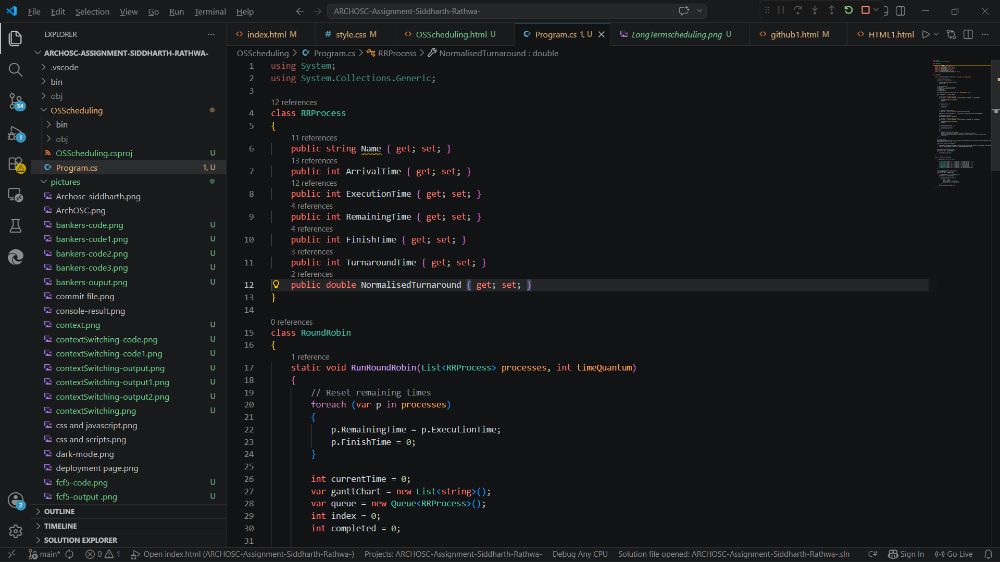
Section 3
Round Robin scheduling gives each process a fixed time slice called a time quantum. When a process uses up its time quantum it is moved to the back of the queue and the next process gets to run. I implemented Round Robin with a time quantum of 1 which means each process only gets 1 unit of CPU time before being switched out. This results in very frequent context switching and longer turnaround times but ensures every process gets equal CPU time. The Gantt chart shows processes switching very rapidly between each other.
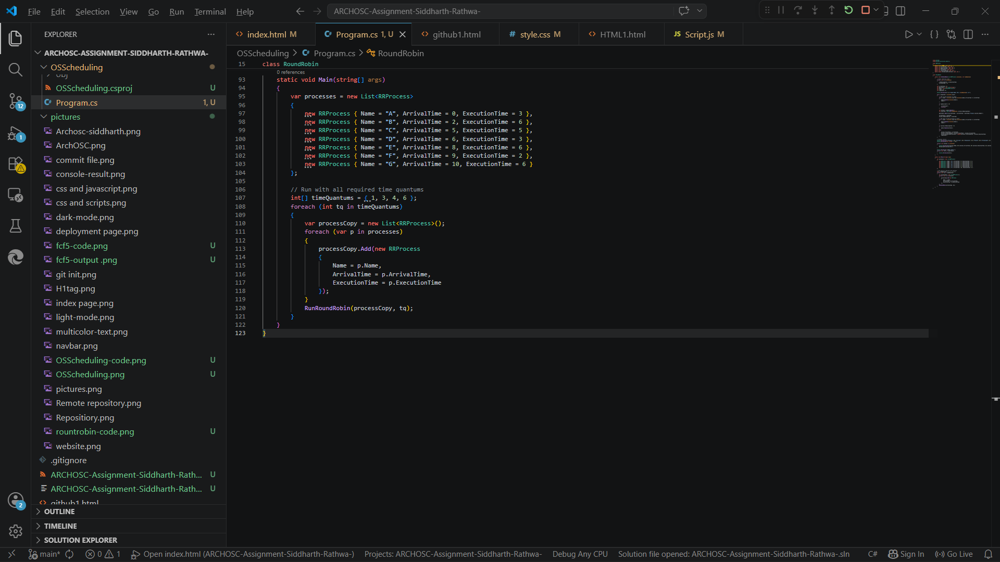
Section 3 - continued
With a time quantum of 3 each process gets 3 units of CPU time before being switched out. This reduces the number of context switches compared to TQ=1 and results in better turnaround times for shorter processes. Longer processes still need multiple rounds to complete but the system is more efficient than with TQ=1. The Gantt chart shows less frequent switching between processes.
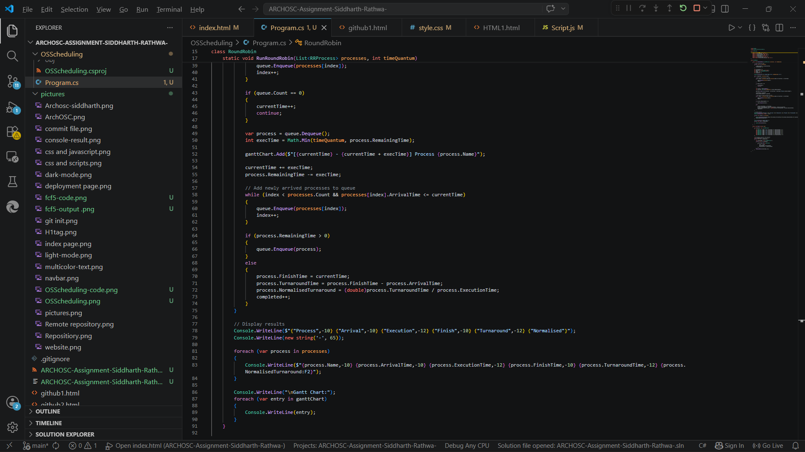
Section 3- Continued
With a time quantum of 6 most processes can complete in a single round without being interrupted. This results in the lowest number of context switches and the best turnaround times overall. However if a process needs more than 6 units it will still be interrupted and moved to the back of the queue. A larger time quantum makes Round Robin behave more similarly to FCFS scheduling.
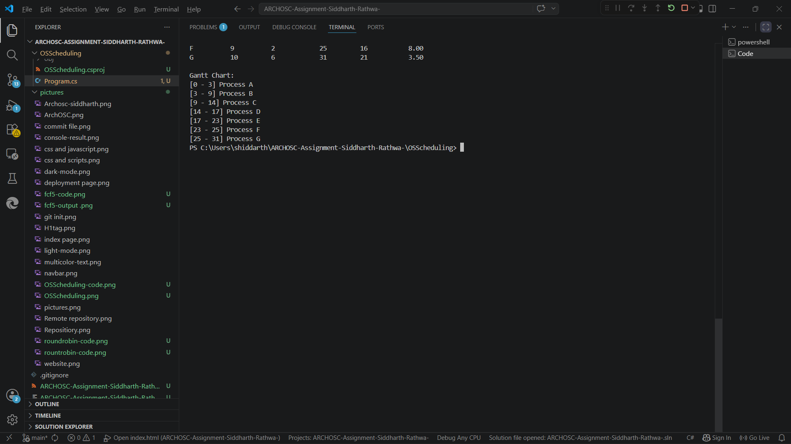
Section 3 - Continued
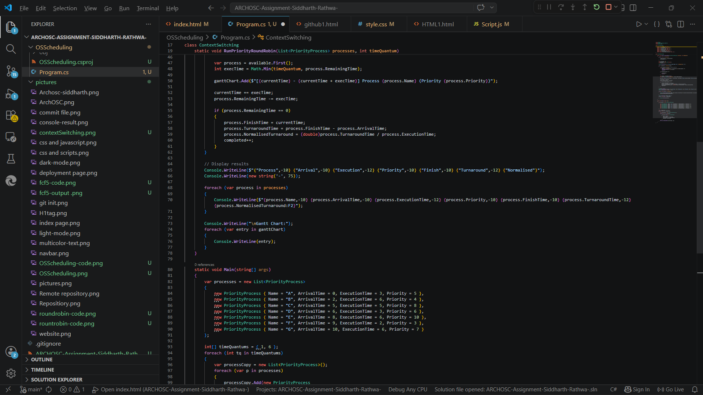
Section 4
I extended the Round Robin simulation to include priority based scheduling. Instead of simply taking the next process in the queue the scheduler always picks the highest priority process that has arrived. With a time quantum of 1 the scheduler checks priorities very frequently and switches to a higher priority process almost immediately when one becomes available. This means high priority processes like Process E with priority 10 get more CPU time and complete faster while lower priority processes have to wait longer.
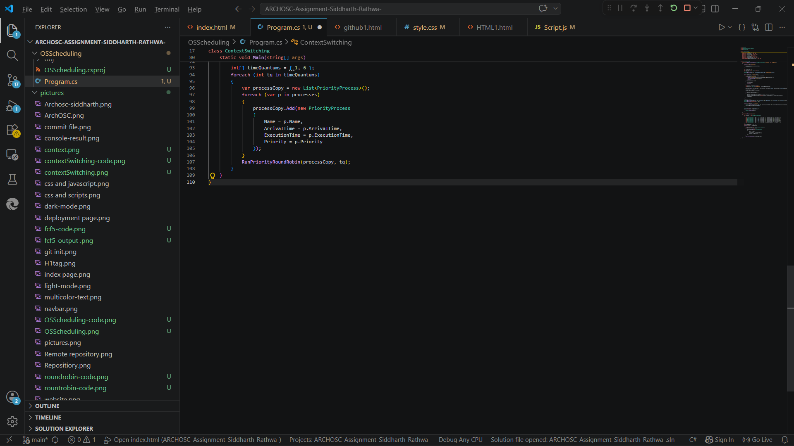
Section 4 - Continued
With a time quantum of 6 and priority based scheduling each high priority process gets a longer uninterrupted run before being switched out. This reduces context switching overhead while still ensuring higher priority processes are favoured. The Gantt chart shows fewer switches compared to TQ=1 and high priority processes still complete before lower priority ones. This is a more efficient approach for real world systems where frequent context switching wastes CPU time.
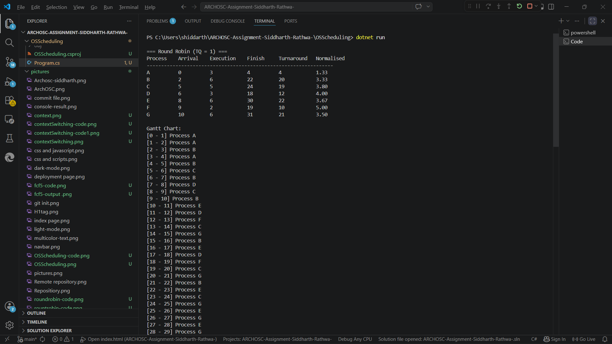
Section 4 - continued
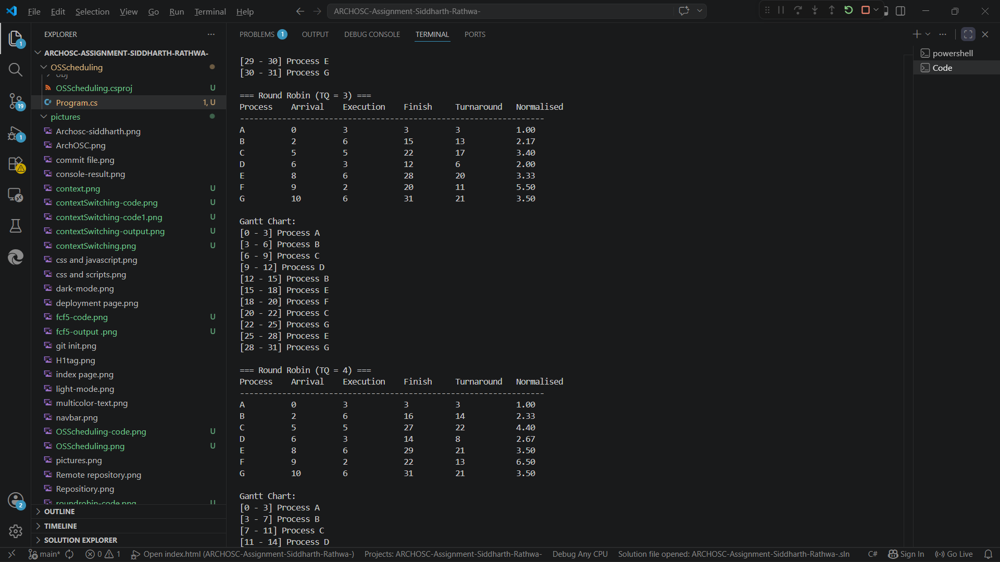
Section 4 - continued
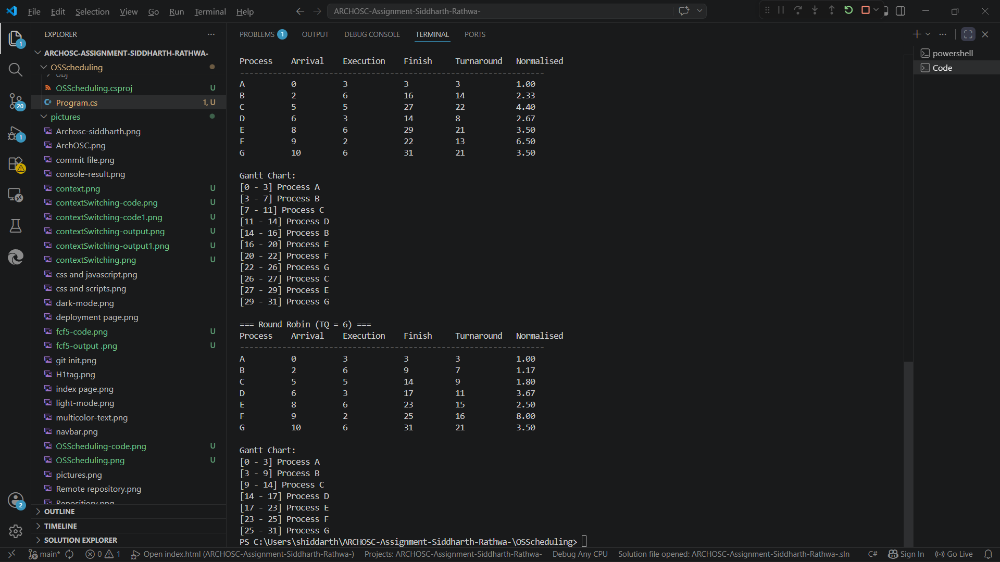
Section 4 - Continued
Reflection
In this lab I learned about the different levels of CPU scheduling and implemented two key scheduling algorithms in C#. FCFS is simple and fair but can lead to long waiting times for short processes if a long process arrives first. Round Robin improves fairness by giving each process equal CPU time but the choice of time quantum is critical — too small causes too many context switches and too large makes it behave like FCFS. In industry CPU scheduling is a fundamental part of every operating system. Modern operating systems like Windows and Linux use complex scheduling algorithms that combine priority scheduling with time sharing to ensure the system remains responsive for all users and processes. Understanding these algorithms helps developers write more efficient programs and understand why some tasks take longer than others on a busy system.